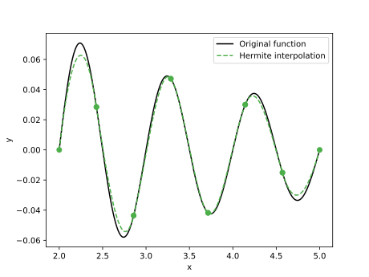

En esta entrada encontramos las funciones de interpolación de Hermite
para el dominio [-1, 1]. Luego, las usamos para una interpolación a
trozos. Observe que esta interpolación tiene continuidad \(C^1\)
y no \(C^0\) como en la interpolación de Lagrange.
Para calcular los polinomios explícitamente podemos usar sympy .
System Message: ERROR/3 (<string> , line 9)
Cannot find pygments lexer for language "ipython2"
.. code:: ipython2
from __future__ import division
import numpy as np
import sympy as sym
import matplotlib.pyplot as plt
Queremos encontrar una base con funciones que sastisfagan
\begin{align*}
N_1(x_1) &= 1\\
N_1(x_2) &= 0\\
N_2(x_1) &= 1\\
N_2(x_2) &= 0\\
N'_3(x_1) &= 1\\
N'_3(x_2) &= 0\\
N'_4(x_1) &= 1\\
N'_4(x_2) &= 0
\end{align*}
Esto puede escribirse como
\begin{equation*}
\begin{bmatrix}
1 &x_1 &x_1^2 &x_1^3\\
1 &x_2 &x_2^2 &x_2^3\\
0 &1 &2x_1 &3x_1^2\\
0 &1 &2x_2 &3x_2^2
\end{bmatrix}
\begin{bmatrix}
a_{11} &a_{12} &a_{13} &a_{14}\\
a_{21} &a_{22} &a_{23} &a_{24}\\
a_{31} &a_{32} &a_{33} &a_{34}\\
a_{41} &a_{42} &a_{43} &a_{44}
\end{bmatrix} =
\begin{bmatrix}
1 &0 &0 &0\\
0 &1 &0 &0\\
0 &0 &1 &0\\
0 &0 &0 &1
\end{bmatrix}
\end{equation*}
La fórmula para la interpolación sería
\begin{equation*}
f(x) \approx N_1(x) u_1 + N_2(x) u_2 + |J|(N_3(x) u'_3 + N_4(x) u'_4)\quad \forall x\in [a, b]
\end{equation*}
con \(|J| = (b - a)/2\) el determinante jacobiano de la transformación.
System Message: ERROR/3 (<string> , line 59)
Cannot find pygments lexer for language "ipython2"
.. code:: ipython2
x1, x2, x = sym.symbols("x1 x2 x")
V = sym.Matrix([
[1, x1, x1**2, x1**3],
[1, x2, x2**2, x2**3],
[0, 1, 2*x1, 3*x1**2],
[0, 1, 2*x2, 3*x2**2]])
V
\begin{equation*}
\left[\begin{matrix}1 & x_{1} & x_{1}^{2} & x_{1}^{3}\\
1 & x_{2} & x_{2}^{2} & x_{2}^{3}\\
0 & 1 & 2 x_{1} & 3 x_{1}^{2}\\
0 & 1 & 2 x_{2} & 3 x_{2}^{2}\end{matrix}\right]
\end{equation*}
Podemos ver que la matriz anterios e una matriz de Vandermonde confluente .
Es imilar a una matriz de Vandermonde para los primeros \(n\) nodos
y las derivadas de cada columna para los siguientes.
Los coeficientes de nuestros polinomios están dados por la inversa de esta
matriz.
System Message: ERROR/3 (<string> , line 85)
Cannot find pygments lexer for language "ipython2"
.. code:: ipython2
sym.simplify(V.inv())
\begin{equation*}
\left[\begin{matrix}\frac{x_{2}^{2} \left(3 x_{1} - x_{2}\right)}{x_{1}^{3} - 3 x_{1}^{2} x_{2} + 3 x_{1} x_{2}^{2} - x_{2}^{3}} & \frac{x_{1}^{2} \left(x_{1} - 3 x_{2}\right)}{x_{1}^{3} - 3 x_{1}^{2} x_{2} + 3 x_{1} x_{2}^{2} - x_{2}^{3}} & - \frac{x_{1} x_{2}^{2}}{x_{1}^{2} - 2 x_{1} x_{2} + x_{2}^{2}} & - \frac{x_{1}^{2} x_{2}}{x_{1}^{2} - 2 x_{1} x_{2} + x_{2}^{2}}\\- \frac{6 x_{1} x_{2}}{x_{1}^{3} - 3 x_{1}^{2} x_{2} + 3 x_{1} x_{2}^{2} - x_{2}^{3}} & \frac{6 x_{1} x_{2}}{x_{1}^{3} - 3 x_{1}^{2} x_{2} + 3 x_{1} x_{2}^{2} - x_{2}^{3}} & \frac{x_{2} \left(2 x_{1} + x_{2}\right)}{x_{1}^{2} - 2 x_{1} x_{2} + x_{2}^{2}} & \frac{x_{1} \left(x_{1} + 2 x_{2}\right)}{x_{1}^{2} - 2 x_{1} x_{2} + x_{2}^{2}}\\\frac{3 x_{1} + 3 x_{2}}{x_{1}^{3} - 3 x_{1}^{2} x_{2} + 3 x_{1} x_{2}^{2} - x_{2}^{3}} & - \frac{3 x_{1} + 3 x_{2}}{x_{1}^{3} - 3 x_{1}^{2} x_{2} + 3 x_{1} x_{2}^{2} - x_{2}^{3}} & - \frac{x_{1} + 2 x_{2}}{x_{1}^{2} - 2 x_{1} x_{2} + x_{2}^{2}} & - \frac{2 x_{1} + x_{2}}{x_{1}^{2} - 2 x_{1} x_{2} + x_{2}^{2}}\\- \frac{2}{x_{1}^{3} - 3 x_{1}^{2} x_{2} + 3 x_{1} x_{2}^{2} - x_{2}^{3}} & \frac{2}{x_{1}^{3} - 3 x_{1}^{2} x_{2} + 3 x_{1} x_{2}^{2} - x_{2}^{3}} & \frac{1}{x_{1}^{2} - 2 x_{1} x_{2} + x_{2}^{2}} & \frac{1}{x_{1}^{2} - 2 x_{1} x_{2} + x_{2}^{2}}\end{matrix}\right]
\end{equation*}
Y remplazamos los valores para los nodos extremos, -1 y 1.
System Message: ERROR/3 (<string> , line 96)
Cannot find pygments lexer for language "ipython2"
.. code:: ipython2
V_inv = sym.simplify(V.subs({x1:-1, x2:1}).inv())
V_inv
\begin{equation*}
\left[\begin{matrix}\frac{1}{2} & \frac{1}{2} & \frac{1}{4} & - \frac{1}{4}\\
- \frac{3}{4} & \frac{3}{4} & - \frac{1}{4} & - \frac{1}{4}\\
0 & 0 & - \frac{1}{4} & \frac{1}{4}\\
\frac{1}{4} & - \frac{1}{4} & \frac{1}{4} & \frac{1}{4}\end{matrix}\right]
\end{equation*}
Los polinomios son el producto de los coeficientes y los monomios
System Message: ERROR/3 (<string> , line 113)
Cannot find pygments lexer for language "ipython2"
.. code:: ipython2
sym.factor(V_inv.T * sym.Matrix([1, x, x**2, x**3]))
\begin{equation*}
\left[\begin{matrix}\frac{1}{4} \left(x - 1\right)^{2} \left(x + 2\right)\\- \frac{1}{4} \left(x - 2\right) \left(x + 1\right)^{2}\\\frac{1}{4} \left(x - 1\right)^{2} \left(x + 1\right)\\\frac{1}{4} \left(x - 1\right) \left(x + 1\right)^{2}\end{matrix}\right]
\end{equation*}
La base interpolante sería
\begin{align*}
N_1 (x) &= \frac{1}{4} (x - 1)^2 (2 + x)\\
N_2 (x) &= \frac{1}{4} (x + 1)^2 (2 - x)\\
N_3 (x) &= \frac{1}{4} (x - 1)^2 (x + 1)\\
N_4 (x) &= \frac{1}{4} (x + 1)^2 (x - 1)\, ,
\end{align*}
y la siguiente función calcula la interpolación para una función y
derivada dadas
System Message: ERROR/3 (<string> , line 137)
Cannot find pygments lexer for language "ipython2"
.. code:: ipython2
def hermite_interp(fun, grad, x0=-1, x1=1, npts=101):
jaco = (x1 - x0)/2
x = np.linspace(-1, 1, npts)
f1 = fun(x0)
f2 = fun(x1)
g1 = grad(x0)
g2 = grad(x1)
N1 = 1/4*(x - 1)**2 * (2 + x)
N2 = 1/4*(x + 1)**2 * (2 - x)
N3 = 1/4*(x - 1)**2 * (x + 1)
N4 = 1/4*(x + 1)**2 * (x - 1)
interp = N1*f1 + N2*f2 + jaco*(N3*g1 + N4*g2)
return interp
En este caso, interpolamos la función sinc
System Message: ERROR/3 (<string> , line 155)
Cannot find pygments lexer for language "ipython2"
.. code:: ipython2
def fun(x):
return np.sin(2*np.pi*x)/(2*np.pi*x)
def grad(x):
return np.cos(2*np.pi*x)/x - np.sin(2*np.pi*x)/(2*np.pi*x**2)
El siguiente bloque de código calcula la interpolación y la grafica.
System Message: ERROR/3 (<string> , line 166)
Cannot find pygments lexer for language "ipython2"
.. code:: ipython2
a = 2
b = 5
nels = 7
npts = 200
x = np.linspace(a, b, npts)
y = fun(x)
plt.plot(x, y, color="black")
xi = np.linspace(a, b, num=nels, endpoint=False)
dx = xi[1] - xi[0]
for x0 in xi:
x1 = x0 + dx
x = np.linspace(x0, x1, npts)
y = hermite_interp(fun, grad, x0=x0, x1=x1, npts=npts)
plt.plot(x, y, linestyle="dashed", color="#4daf4a")
plt.plot([x[0], x[-1]], [y[0], y[-1]], marker="o", color="#4daf4a",
linewidth=0)
plt.xlabel("x")
plt.ylabel("y")
plt.legend(["Exact function", "Interpolation"])
plt.show()

Comentarios
Comments powered by Disqus